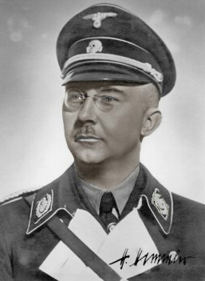
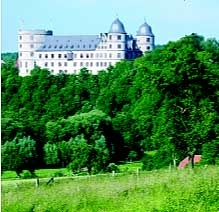

"Foreign Intelligence Chief Walter Schellenburg observed Himmler:
'I happened to come into the room by accident and to see these twelve SS leaders sitting in a circle, all sunk in deep and silent contemplation, was indeed a remarkable sight.'" 5
|  |  |
Reichsführer Heinrich Himmler was a Satanist and had a coven of 12 SS Officers. He was the 13th member. He worked diligently with along with Adolf Hitler to destroy Christianity. Christian symbols, characters [which are all Jewish], and rituals, were replaced with original Pagan [Pagan means 'Gentile'] rites.
"So too, had the form for two principle ceremonies adapted from pagan rites to replace Christian festivals – those of the summer and winter solstices. An English visitor attended a summer solstice festival in 1936: a circle of Hitler Youths chanted consciously pagan litanies in preparation for the moment at midday when the sun reached its zenith. As it hung overhead there was silence, 'then a paean of praise rang out for the Aryan God." 1
[The Aryan God is Satan].
" 'The source of all life is Got.' The word was given only one 't' in the transcription, allegedly the old German spelling, but it was chiefly useful, to distinguish the SS God from the conventional Christian God." 2
"Himmler was fascinated by the Far East and its religions. "He hated Christianity and carried a pocket book in which he had collected homilies from the Hindu Bhagavadgita." 3
Reichsführer Himmler conducted numerous black magick rituals at Wewelsburg Castle. These rituals were conducted in the utmost secrecy. They included necromancy [communication with the dead]. Wewelsburg had many powerful Satanic symbols, most of these were white-washed and removed from walls and pillars in early 1945.4 In 1945, under orders from Reichsführer Himmler, Wewelsburg was blown up to keep it from the invading armies. Some of the castle survived and much has been restored. True Paganism which is synonymous with Satanism is known for its emphasis on the Sun [666].
|
|
"Himmler and his inner circle of Twelve Gruppenführers would engage in mystic communication with the dead Teutons and perform other spiritual exercises. Secrecy was the key element in the SS and most especially at Wewelsburg." "Foreign Intelligence Chief Walter Schellenburg observed Himmler: 'I happened to come into the room by accident and to see these twelve SS leaders sitting in a circle, all sunk in deep and silent contemplation, was indeed a remarkable sight.'" 5 |
Reichsführer Himmler worked diligently to destroy Christianity within the Third Reich. He fully understood the nefarious program of Christianity and how it was a most powerful tool created by the Jews for the enslavement humanity and the destruction of Aryan peoples. Jews have a long history of working to destroy their enemies from the inside. This is done mostly by their infiltration or the infiltration of Gentiles in their employ. Book after book has been written about the Nazis being Christian. Nothing could be further from the truth. The many rune symbols, most notably the SS and swastika speak for themselves. Adolf Hitler played the Vatican.
Reichsführer Himmler on Christian marriage, 3rd May, 1943:
“Marriage as it is today is the evil work of the Catholic Church. Regarded dispassionately and without prejudice, our present marriage laws are absolutely immoral. The marriage laws of today, presumably designed to protect the family, in fact led to a decrease in the size of families. After the war…monogamy will cease to be enforced upon promiscuous mankind. The SS and the heroes of this war will have special privileges. They will immediately have the right to take a second wife, who shall be considered to be as legitimate as the first. The permission to have two wives will be a mark of distinction.
SS Officer Otto Rahn SS-Obersturmführer wrote a book, titled 'Luzifer's Hofgesind'
[Lucifer's Court Servants]:
"He spoke before a large audience on January 9th, 1938 at the Dietrich-Eckart Haus in Dortmund, Germany. Rahn set a new limit to the spirit tied to the Romans, to the belief in a life after death, and the fear of hell; he rejected Yahweh and the Jewish teachings, and professed 'Luzifer's Hofgesind' in whose name Kurt Eggers closed the evening with the following greeting: 'Lucifer, who has been done wrong to, greets you.' 6
Here is an excerpt from Luzifer's Hofgesind:
"There is much more [light] than in the houses of God—cathedrals and churches—where Lucifer neither is able nor wishes to enter due to all the somber, stained glass windows wherein are painted the Jewish prophets, apostles, and saints. The Forest, that, that was free!"
"Lucifer’s Servants is at least partly a genuine Nazi propaganda tract and several passages make a good case for the worship of Lucifer. Indeed, this idea of Lucifer as a benign or divine being was familiar and congenial to the “white light” Theosophists of the 1920’s who, after all entitled one of their official German publications Lucifer."
"For Rahn, the Grail was an emblem set up in opposition to the established Church—indeed, was a Luciferian symbol—and for this the Nazis were grateful." "…the eternal struggle between Light and Darkness. Light in this case was represented by—not Jesus or Jehova— but by another spirit, the “Light-Bearer.” To Rahn, this Entity represented the highest good. To Rahn, the Nazi Reich in general—and the SS in particular—became servitors of an ancient pagan cult whose God was known to the medieval Christians not as Jesus but as Lucifer." "…and having established that they celebrated—as the numerous examples have proved—the marvels of the Crown of Lucifer, it is permitted to believe that they had faith in the existence of a Luciferian crown of eternal life. And if we follow this thought to its logical conclusion, we will say that, for them, the God of Love was none other than Lucifer in person.
The God Amor is the God of Spring, as is Apollon. Apollon brought back the light of the Sun: he is a light-bearer, or “Lucifer.” According to the Apocalypse of John, Apollyo-Apollon was equated with the Devil, and according to the belief of the Roman Church...Lucifer is Satan."
7 [Entire paragraph]
SS men were strongly discouraged from participating in Christian religious ceremonies of any kind and were actively encouraged to formally break with the Church. Pagan religious ceremonies took the place of Christian ones. Winter Solstice ceremonies replaced Xmas.8"Starting 1939 the word “Christmas” was forbidden to appear on any official SS document" and the Summer Solstice was formally celebrated. These ceremonies were celebrated the old way with sacred fires, and torch lit processions.
"Weddings and baptisms were replaced by pagan SS rituals and gradually the entire Christian liturgical rubric was in the process of being replaced by a completely pagan version. Even the Hitler Youth were not immune. A so-called “Nazi Primer” published during the war contains many examples of pagan ideology and anti-Christian sentiment designed for its youthful readership." 9
An SS officer took the place of an Christian priest/minister in presiding over weddings, baptisms and funerals. A manual titled "The SS Family Procedure for Conducting Family Celebrations" was issued to every SS man and woman. Therein contained Pagan celebrations for all eight of the important Pagan holidays of the year.
"Himmler’s dream was to create, out of the SS, a new religion based on the pagan elements of what he perceived to be the original, Ur-Aryan religion of Ancient India and Europe. However, many Germans were devout Christians. Hitler himself realized this, and knew that he had to play politics with them for as long as the churches held power and as long as the people felt they owed spiritual allegiance to the churches and what they represented. In this he was cynical in his dealings with the Church as he was pragmatic with the Capitalists." 10
Unbeknownst to many, daily meditation was the requirement of the SS.
"Himmler set up a school of occultism in the Berlin Branch and many of
the leading ranks of the Totenkopf SS, the Sicherheitsdienst
and the Gestapo were ordered to attend courses in meditation,
transcendentalism and magic. It was in this establishment that Himmler
was persuaded to found the Ahnenerbe, the Nazi Occult Bureau. The
Ahnenerbe incorporated the membership of Crowley's spurious Templar
Order, the Vril, and the Thule Gesellschaft into the Black Order of
the SS." 11
Temple of Set Founder Michael Aquino visited Wewelsburg several times during the early 1980's and was very impressed. He performed a ritual in the North Tower to ressurect the energies of Wewelsburg on the world and incite a "Satanic renaissance: to jump-start the next phase of human evolution. Certainly, this theme is to be found all through Nazi writings and speeches from the very earliest days." 12
Satanism's Origins in the Far East
References:
SS Family Celebrations [Die Gestaltung der Feste im Jahres– und Lebenslauf in der SS-Familie] pdf
1 Himmler by Peter Padfield © 1991
[This book contains a lot of slander]
2 Ibid
3 Himmler's Crusade: The Nazi Expedition to Find the Origins of the Aryan Race by Christopher Hale © 2003; 2006 edition
[This book contains a lot of slander]
4 Heinrich Himmler's Camelot: The Wewelsburg Ideological Center of the SS, 1934-1945 © 1999
5 Unholy Alliance: A History of Nazi Involvement with the Occult by Peter Levenda
© 2002
6 Westfalia Landeszeitung, January 9, 1938, Dr. Wolff Heinrichsdorff
7 Unholy Alliance: A History of Nazi Involvement with the Occult by Peter Levenda
© 2002
8 Ibid
9 Ibid
10 Ibid
11 The Spear of Destiny by Trevor Ravenscroft, 5th Printing, © 1988
12 Unholy Alliance: A History of Nazi Involvement with the Occult by Peter Levenda
© 2002